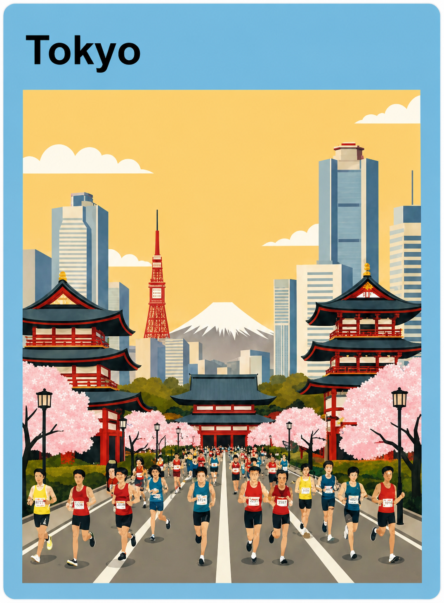
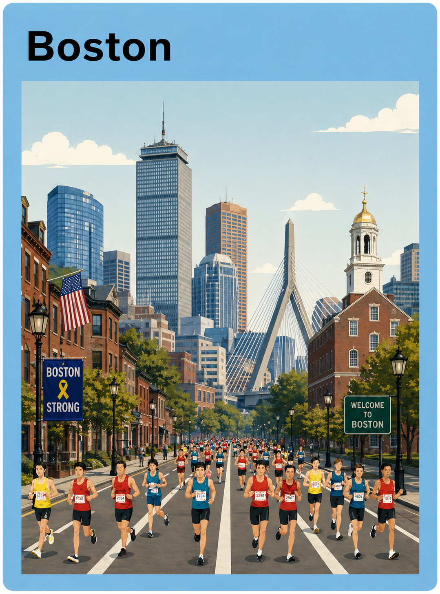
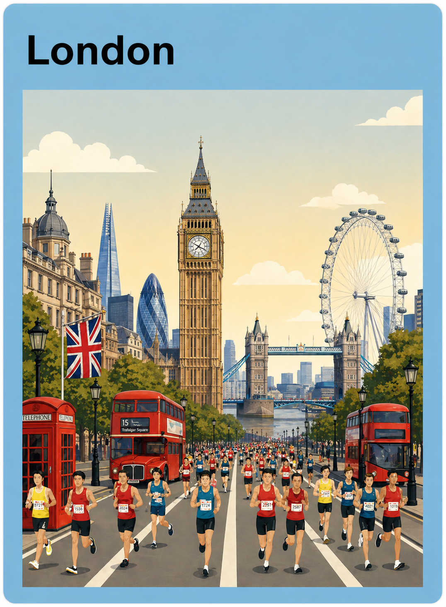
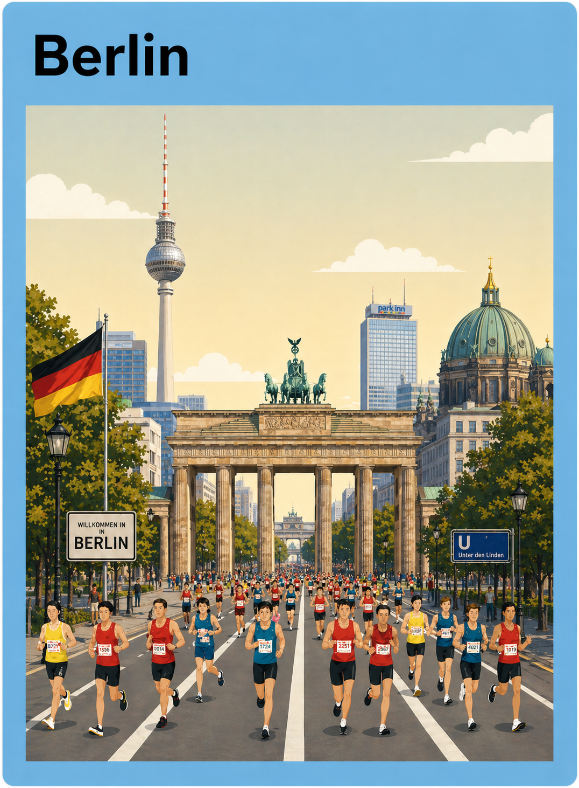
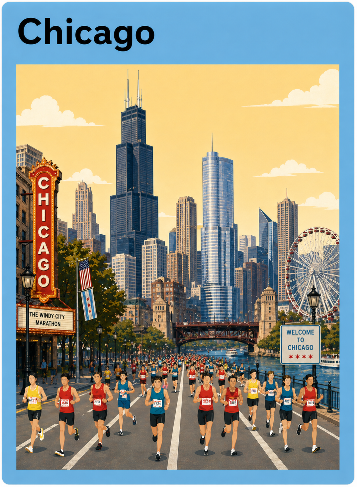
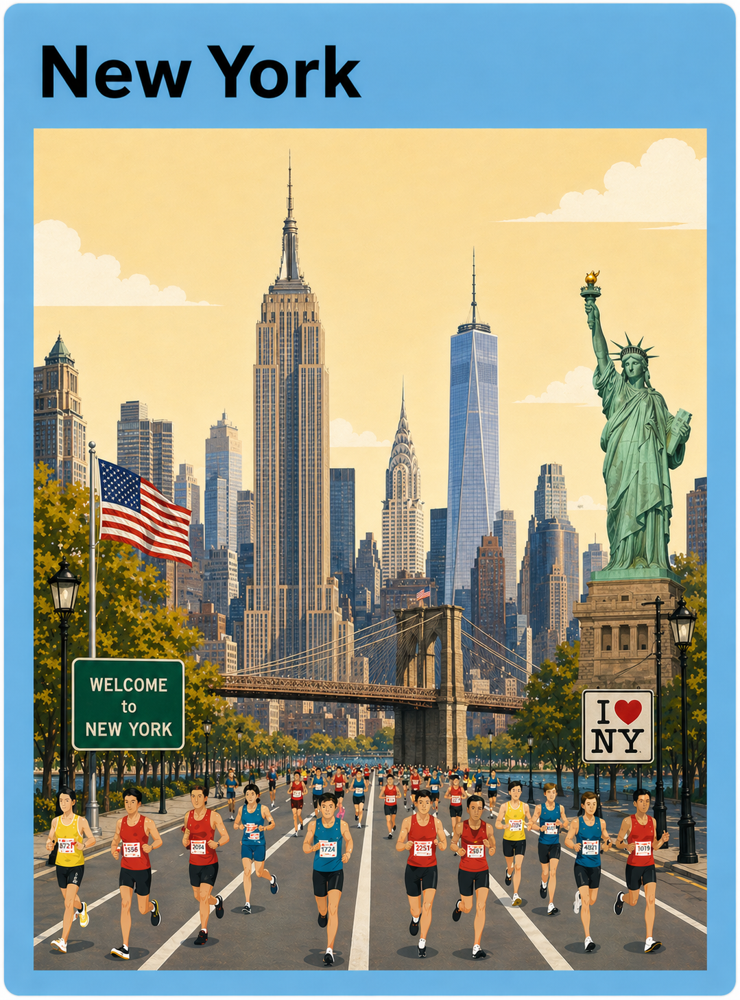

Tokyo
March race week with detailed transport planning and hotel location advice.
Race cities
Each destination has different travel pressures, weather, transport systems and supporter routes.

March race week with detailed transport planning and hotel location advice.

Historic race weekend requiring careful arrival and supporter planning.

Central city access, registration guidance and public transport advice.

Fast course, autumn timing and simple city movement for race weekend.

Flat course, city-centre stays and clear supporter meeting points.

Large-scale event logistics across all five boroughs.